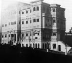

Bir aile dostumuzdan (X) beyin Suadiye taraflarında bir köşkü vardı. Kara tarafından bahçesine girer girmez iki sıralı yemiş ağaçları, ilerilerinde çam ağaçları, gerilerinde çilek tarlaları ve bostanlar; biraz sahile ve selamlık köşküne ilerledikçe mükemmel ve asırlık çam ağaçları, üzerinde adamakıllı bir kameriye; selamlık dairesinin misafir odalarından sonra (...) köşkü ismi verilen kabul dairesi ve önündeki çınar ağacının altında geniş bir set, kanepeler, masalar, büyük şemsiyeler vardı. Önünde rıhtım ve deniz hamamları gözükürdü. Bu kocaman bahçede iki de artezyen kuyusu yaptırılmıştı. Misafir odaları müteadditti. Geceyi geçirenler aşırı ikram ve ince yazlık kürklerine varıncaya kadar gecelik takımlarının abani ve ipek bohçalar içinde emirlerine amade olduğunu görürlerdi.
Hele (X) beyin aşçıları ve ziyafetleri ve haftada bir de cemaatle namazları ve zikirleri dillerde destan olmuştu. “Eli, evi, kalbi ve vicdanı geniş bir adamdır” şöhretini kazanmıştı. Ehli dil olduğunu duyardık. Onu samimi dostları Beyoğlu’na götürür, eğlenirlerdi ve Beyefendi’yi günahtan korkar olduğu için mut’a kıyarlardı ve bir gecelik izdivacın düğününde mutlaka pilav û zerde[143] ziyafetini unutmazlardı. İyi ve muhterem adamdı. Devrin hafiyeleri biçareye iftira ettiler, memuriyete gönderildi. Meşrutiyet’e kadar İstanbul’a gelemedi; geldikten sonra da Hak rahmet eylesin öldü.
Müşir Fuad Paşa’nın Köşkü
Kalamış’tan Fenerbahçe’ye giderken (hâlâ durur) uzun ve parmaklıklı bir duvar vardır. Bu duvar biter bitmez sol taraftaki sokağa saparsanız gene o kadar uzun bir duvar vardır ve içerisi boştur. Yalnız Feneryolu tarafındaki duvarın ucunda bir odalı köşk vardır. İşte Fuad Paşa’nın köşkü. Sultan II. Hamid’den aldığı bir maden imtiyazını sattıktan sonra ele geçen yüz bine yakın altını yiyen köşk... Biz doğduk, büyüdük bir türlü ikmal edilemedi. Bir iki defa birinci katında yapılmakta olan bina yıktırıldı. Bir tanesi daha tecrübe edildi. Yalnız ahır ve arabalar dairesi sabit kalabildi.
Fuad Paşa titizdi. Ufacık kusur görse planı kâmilen değiştirircesine hareket ederdi. Yani bir eski tabirle yapılan hâk ile yeksan olurdu. Binaenaleyh gene Kalamış’ta kiraladığı köşklerde senelerce oturmak mecburiyetinde kalmış, kendine bir ev edinememişti. Babası İncirköylü Müşir Hasan Paşa’dan evvel müşir olan Fuad Paşa bir eve sahibi olamadı.
Muhterem, vakarlı ve terbiyeli bir zattı. Şam’a nefyedilmesine mucip olan hadiseye kadar Sultan II. Hamid onu çok severdi. Paşanın bir türlü yapılamayan köşkünün tek hususiyeti cülus ve veladet-i seniye[144] donanmalarındaki şehameti; fevkaladeliği ve bu gecelerde verdiği ziyafetlerdi. Donanmasının şatafatlı yazılması için Sabah gazetesi muhbirine iki buçuk liralık bir Osmanlı altını verdiğini Sabah gazetesi sahib-i imtiyazı Mihran Efendi’den duyardık.
Zihni Paşa ve Zühtü Paşaların Köşkleri
Meşrutiyet âyanından ve Sultan II. Hamid’in 1908 Meşrutiyeti’nden evvel Ticaret ve Nafia Nâzırı ve Babıâli’de toplanan Maliye Komisyonu Reisi Zihni Paşa’nın Erenköyü’ndeki köşkü, paşanın efendiliği zamanından kalma bir köşktü. İstasyonun arka taraflarındaki cadde üzerinde kâin bağlı bostanlı bu kâşanede kayda şayan bir şey olup olmadığını pek hatırlayamıyorum. Yalnız şunu duyardık: “Kendisinin zevk-i selimi vardır. İyi yemek yer, çok zeki, dirayetli, ehibbasıyla vakit geçirir, sohbet eder; geçenlerde vefat eden damadı Reşad Bey’in misafirlerini yanına çağırtır, iltifat eyler ve mazbut bir adamdır, müsrif değildir” derlerdi.
Paşanın Erenköy komşusu Zühtü Bey (bir aralık Musul valisi de olmuştu. Ben kendisiyle Şura-yı Devlet Mülkiye Dairesi azalığında beraberdim) kalabalık köşkünde bir hayli misafirle de meşgul olurdu. Midesever bir zat olduğu için gece gündür yemek içmek düşünür, davetlilerine yemek sürprizi yapardı.
İstirdat: Şura-yı Devlet’te karşı karşıya otururduk. Bir gün hademe ile bana bir pusula yolladı. Bu pusulada, “Seninki hasta imiş. Gideceksen beni de götür, istifsar edeyim. Sonra da sonra da Nişantaşı’ndaki damadım Hüsnü Bey’e beni bırakırsın” cümleleri vardı. Niyetim olmadığı halde reddetmek istemedim. Dairenin tatilinden sonra benim arabaya girdik, gideceğimiz yere gittik. Gittiğimiz yer biraz da benim evim gibiydi. İçeride yatan veya yatak odasında oturan ev sahibine haber yolladık. Biz bekleyeduralım, üst kattan birisi aşağıya seslendi ve bir gazete kâğıdı parçasını aşağıdaki sofaya atarak uşağa: “Al misafirlere kahve pişir” dedi.
Kapı açık olduğu için biz bunu görmüştük. Zühtü Bey ayağa kalktı. “Bu hasis herifin kahvesi içilmez muhakkak boğazımızda kalır” dedi, yürüdü. Arabamda misafir olduğu cihette ben de onu bırakamadım.
Galip ve Münif Paşaların Köşkleri
Evkaf Nâzırı Galip Paşa’nın köşkü Erenköy istasyonu önünde idi. Damadı Cemal Bey’in köşkü de oracıkta kayınbabasına yakın ve hat üzerinde idi. Maarif Nâzırı Münif Paşa’nın köşkü de gene hat üzerinde ve ağaçlar içine gömülmüş bir halde görünürdü. Köşkün tam önünde de kocaman bir zürafa heykeli vardı. Son zamanlara kadar yerinde duruyordu.
Galip Paşa’nın merakı antika küpler tabak ve kâseler ve çeşmibülbüller olduğu için, dâhili hayli müzeyyen; fakat hariçte alelade kıyafette idi. Yalnız, torunu Şakir Cemal’den duyardık, bağın üzümleri meşhur ve emsalsizmiş. Cemal Bey’in de bahçeye merakı çoktu. Biz Şeyhülislam Cemaleddin Efendi’nin ikinci oğlu Muhtar Bey’le sık sık Şakir’e giderdik. Hele bu ikisi gece gündüz beraber gezer, tozarlardı. Galip Paşa’nın bir damadı da Selanikli Mithat Şükrü [Bleda] Bey’in biraderi Feyzi Bey’dir ki oğlu Fahir Bey Sultan II. Hamid’e damat olmuş ve genç yaşta vefat etmişti.
Diğer köşkler Muhtar Paşa’nın ve Ahmed Eyüp Paşa’nın köşkleri Kızıltoprak’ta Gazi Ethem Paşa’nın köşkü Kozyatağı’nda, Maliye Nâzırı Ziya Paşa Erenköy’de Maliye Nâzırı Sabri Bey Kalamış Caddesi üzerinde, Mahmud Muhtar Paşa Moda’da, Mabeyinci Ragıp Paşa, Operatör Cemil Paşa Caddebostanı ve Çiftehavuzlar’daydılar. Hüseyin Rami Paşa, Cemil Paşa’ya komşu idi. Balıkhane Nâzırı Ali Bey de buralarda otururdu. Bir rehber yazar gibi olmamak için şunu da arz edeyim ki bu köşklerin ve sahiplerinin elbette kendilerine mahsus bir tavrı, yaşayışlarının tarzı vardı. Ancak şöhret bulmuş hususiyetleri yoktu. Mahmud Muhtar Paşa’nın Saffeti Ziya ve Fes Aziz Bey gibi arkadaşları ve bir hayli dalkavuğu vardı. Bahusus harem dairesi çok kalabalıktı. Refikası Prenses Nimet Hanımefendi Hıdiv İsmail Paşa’nın kızlarından biriydi ve hakikaten hayırsever bir hanımefendi idi. Kocasından çok sonra geçen sene vefat etmiştir. Bu köşklerden birçoğu aile reislerinin irtihalinden sonra veya evvel atıldı, satıldı.
Akşam, 3 Ocak 1947

Melek Ahmet Fehmi Paşa Konağı
(Kaynak: wowTURKEY.com)